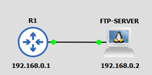

A
B
C
D
Cisco IOS není dokonalý a někdy se stane, že se v něm objeví chyba, kterou je nutné bezokladně napravit novou verzí.
Jenže jak se tam ta nová verze nahraje?
Právě k tomuto účelu slouží FTP a TFTP protokol.
FTP nebo-li File Transport Protocol, je protokol, který se používá pro přenos dat mezi FTP serverem a klientem.
FTP je založené na principu klient/server.
Klient a server spolu navazují dva typy spojení - datové (Data connection) a ovládací (Control connection). Datové slouží k přenosu dat mezi serverem a klientem. Ovládací zas k zasílání FTP příkazů na server.
Celkově funguje FTP tak, že:
Veškerá komunikace klasického FTP protokolu není žádným způsobem zašifrovaná - veškerý přenos je v plaintextu (včetně FTP autentizace).
Máme následujicí situaci - chceme upgradovat IOS na nejnovější verzi 15.7.3M8.
Nejnovější verze je nahraná na našem lokálním FTP serveru s IP adresou 192.168.0.2.
Přihlašovací údaje jsou admin/admin123.
Nejdříve na R1 specifikujeme přihlašovací údaje:
R1(config)#ip ftp username admin R1(config)#ip ftp password admin123
Ještě předtím než stáhneme IOS z FTP serveru, je dobré si tam nahrát stávající verzi IOSu, to uděláme pomocí příkazu:
R1#copy flash:c2900-universalk9-mz.SPA.156-3.M9.bin ftp:c2900-universalk9-mz.SPA.156-3.M9.bin
Nyní přetáhneme novou verzi z FTP serveru -
R1#copy ftp:c2900-universalk9-mz.SPA.157-3.M8.bin flash:c2900-universalk9-mz.SPA.157-3.M8.bin
Novou verzi pak stačí pouze nabootovat a restartovat systém -
R1(config)#boot system flash:c2900-universalk9-mz.SPA.157-3.M8.bin R1#reload
Nyní by se R1 mělo nabootovat s novou verzí - to koneckonců můžeme po nabootování zkontrolovat -
R1#show version
TFTP byl vyvinut po FTP a je určený k pouhému přenosům dat, čili neumožňuje například mazání obsahu, procházení obsahu atd.
TFTP používá UDP port 69. Použití UDP by vám mělo naznačit, že protokol nebude spolehlivý, nicméně TFTP zaručí spolehlivost svým způsobem. K tomu, aby TFTP byl spolehlivý využívá techniku potvrzování zpráv, kdy zařízení pošle ACK zprávu po tom, co obdrželo daná data od druhého zařízení. Zařízení má na odpověď určitý čas, pokud ten čas vypršel, tak druhé zařízení posílá danou zprávu znova.
Minule jsme FTP použili k aktualizaci IOSu, nyní si ukážeme další využití této skupiny protokolů - Zálohování configu:
K tomu, abychom zálohovali config pomocí TFTP nám stačí pouze jediný příkaz -
R1#copy startup-config tftp:
Příkaz nás potom dále vyzve k zadání IP adresy TFTP serveru a k pojmenování přetáhnutého souboru. Poté tam přesune samotný soubor.
Kdybychom chtěli config poslat zpátky na router, tak bychom pouze obrátili startup-config a tftp:
R1#copy tftp: startup-config
Při použití příkazu bychom pak byli vyzváni, kromě zadání IP adresy, ke specifikaci souboru k odeslání.
Za tu dobu, co FTP existuje, vzniklo mnoho dalších variant, které vylepšují zabezpečení:
| Příkazy | Popis | Mód |
|---|---|---|
| ip ftp username {uživatelské jméno} | Specifikuje uživatelské jméno | Global Config |
| ip ftp password | Specifikuje heslo | Global Config |
| ip ftp passive | Navazování datového spojení v pasivním módu | Global Config |
| copy {zdroj} {příjemce} | Přenese specifikovaný soubor | Priviledged EXEC |
| boot system {Cisco IOS} | Specifikuje jaký IOS se má po restartu spustit | Global Config |
| reload | Restartuje zařízení | Priviledged EXEC |
FTP a protokoly na něm založené slouží k přenosu dat.
A
B
C
D